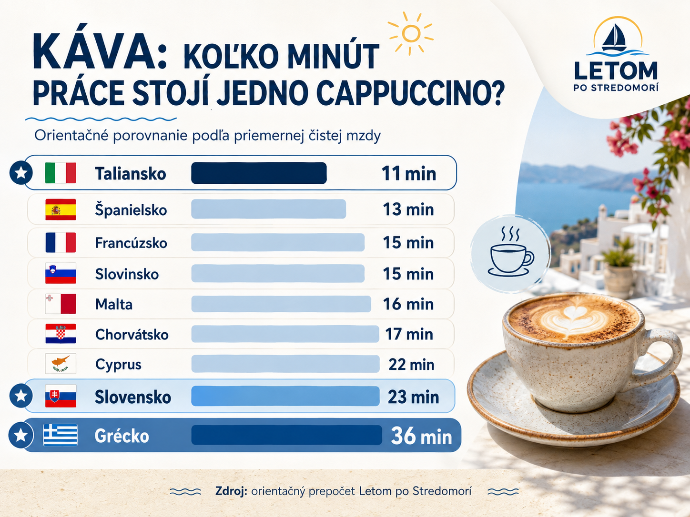
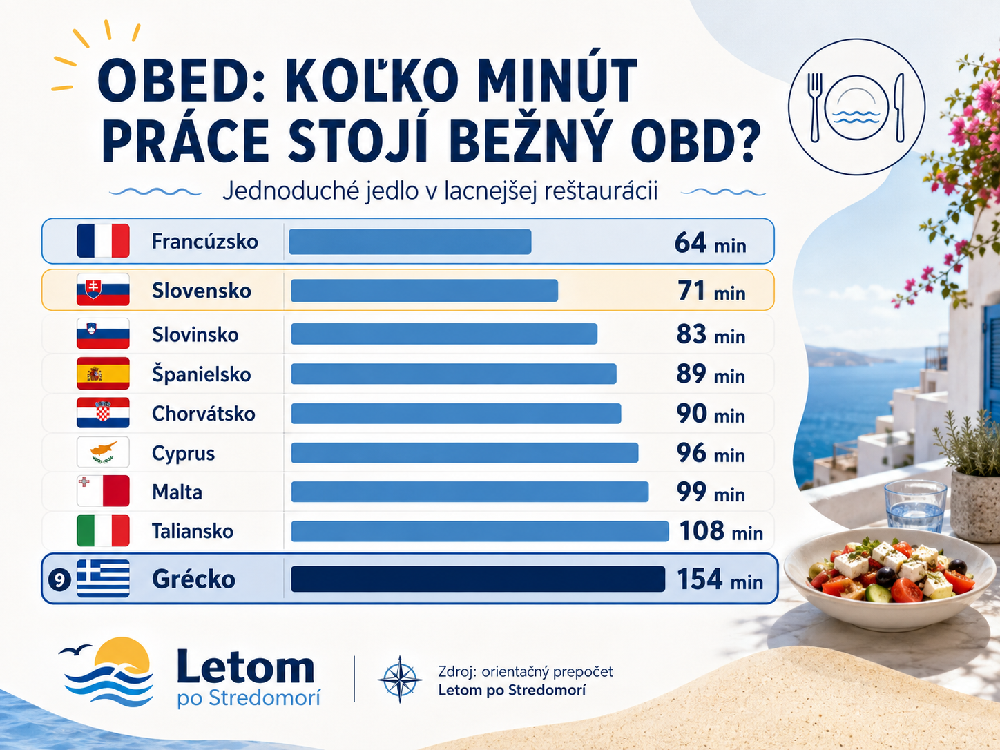
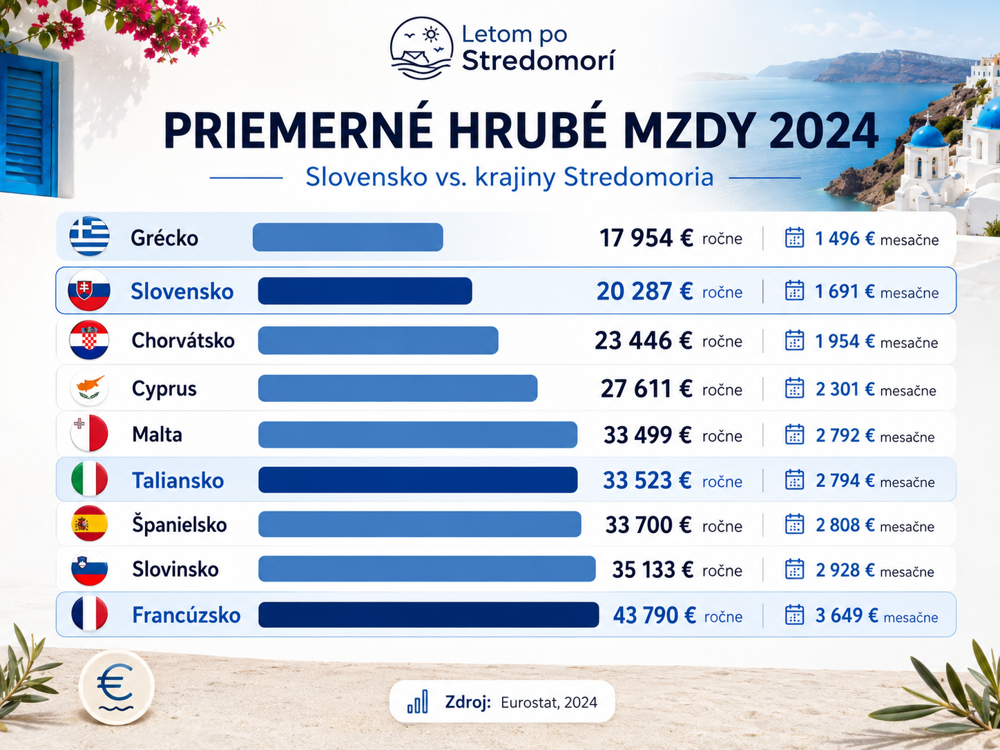
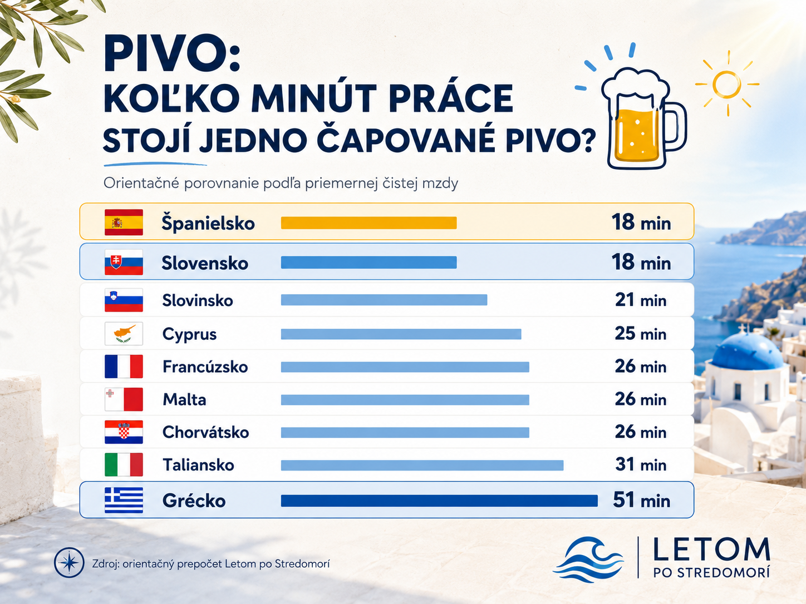
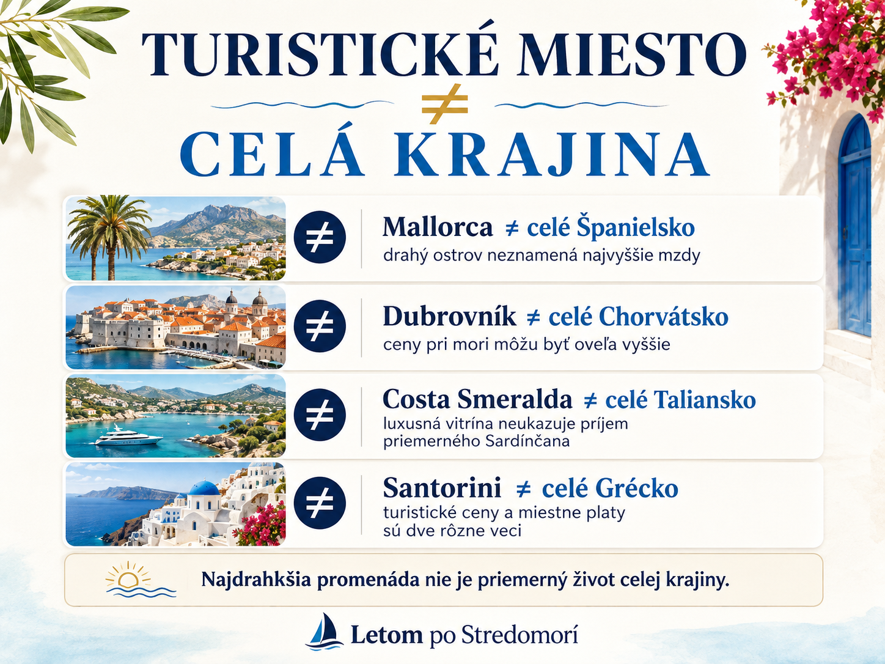
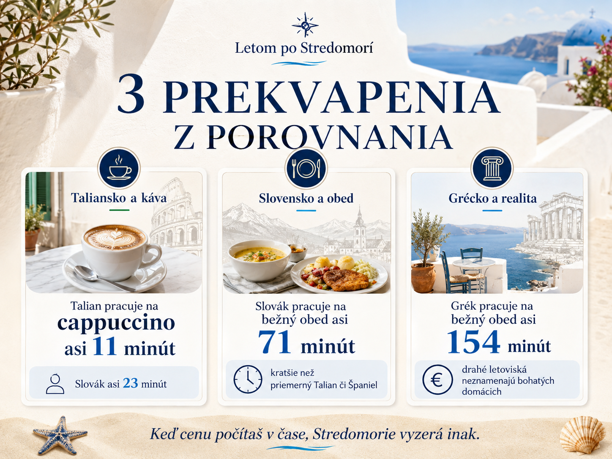

11 minút. 23 minút. 36 minút.
Približne toľko musí pracovať Talian, Slovák a Grék, aby si zarobili na jedno bežné cappuccino vo svojej krajine.
A to je možno oveľa zaujímavejšie porovnanie než samotné priemerné platy.
Pretože na dovolenke síce platíme eurami, ale skutočnú cenu vecí cítime podľa toho, koľko zo svojej výplaty – alebo koľko svojho času – za ne musíme odovzdať.
Pozreli sme sa preto na Stredomorie trochu inak.
Nie iba na to, koľko zarába Slovák, Talian, Španiel či Grék.
Ale na oveľa jednoduchšiu otázku:
Koľko minút musia pracovať na kávu, pivo a obed?
A niektoré výsledky sú úplne opačné, než by človek čakal.
Veľký dovolenkový súboj
| Krajina | ☕ Cappuccino | 🍺 Pivo | 🍽️ Bežný obed |
|---|---|---|---|
| 🇮🇹 Taliansko | 11 min | 31 min | 108 min |
| 🇪🇸 Španielsko | 13 min | 18 min | 89 min |
| 🇫🇷 Francúzsko | 15 min | 26 min | 64 min |
| 🇸🇮 Slovinsko | 15 min | 21 min | 83 min |
| 🇲🇹 Malta | 16 min | 26 min | 99 min |
| 🇭🇷 Chorvátsko | 17 min | 26 min | 90 min |
| 🇨🇾 Cyprus | 22 min | 25 min | 96 min |
| 🇸🇰 Slovensko | 23 min | 18 min | 71 min |
| 🇬🇷 Grécko | 36 min | 51 min | 154 min |
Ide o náš orientačný prepočet aktuálnych priemerných cien a priemerných čistých miezd z databázy Numbeo pri približne 173 pracovných hodinách mesačne. Numbeo zbiera údaje od používateľov, takže nejde o oficiálnu štatistiku a ceny na Mykonose, v centre Nice či Dubrovníka môžu byť úplne inde. Ako porovnanie pomeru „bežná cena verzus bežný príjem“ je však veľmi názorné. A teraz sa pozrime, čo tieto čísla vlastne hovoria.
☕ Prvé prekvapenie: talianska káva je naozaj lacná

Talian potrebuje na bežné cappuccino približne:
11 minút práce.
Slovák:
23 minút.
Grék:
36 minút.
V Taliansku pritom vychádza priemerné cappuccino približne na 1,76 €, kým na Slovensku okolo 2,56 €. Talian teda nielenže priemerne zarába viac, ale ešte aj za kávu zaplatí menej.
Výsledok je pozoruhodný:
Slovák musí na cappuccino pracovať približne dvakrát tak dlho ako Talian.
A Grék viac než trikrát.
Práve tu človek pochopí, prečo môže byť každodenné espresso či cappuccino v Taliansku úplne inou súčasťou života než návšteva kaviarne niekde inde.
Ale stačí presunúť sa od kávy k jedlu a celé poradie sa obráti.
🍽️ Obed: a zrazu Slovensko poráža Taliansko aj Španielsko

Koľko práce stojí jednoduché jedlo v lacnejšej reštaurácii?
Francúz približne:
1 hodinu a 4 minúty.
Slovák:
1 hodinu a 11 minút.
Španiel:
1 hodinu a 29 minút.
Talian:
1 hodinu a 48 minút.
A Grék?
2 hodiny a 34 minút.
To je jeden z najväčších paradoxov celého porovnania.
Na Slovensku vychádza orientačná cena jednoduchého reštauračného jedla približne na 8 €. V Taliansku 17,50 €, Španielsku 15 €, Francúzsku 15 € a Grécku tiež približne 15 €.
Vyššia talianska či španielska výplata teda automaticky neznamená, že všetko je pre miestneho dostupnejšie.
Na obyčajný obed pracuje podľa tohto modelu Slovák kratšie než Talian, Španiel, Chorvát, Cyperčan, Malťan aj Grék.
A práve toto zo samotnej tabuľky priemerných platov nikdy neuvidíme.
🇬🇷 A Grécko? Toto môže Slováka prekvapiť najviac

Grécko si spájame s dovolenkou.
Taverny, frappé, gyros, more, ostrovy.
A potom príde účet na Santorini alebo Mykonose a človek si možno pomyslí:
„Takéto ceny si asi môžu dovoliť, keď tu žijú.“
Lenže už oficiálny Eurostat ukazuje niečo zaujímavé.
Priemerná ročná mzda prepočítaná na plný pracovný úväzok bola v roku 2024 na Slovensku približne 20 287 €.
V Grécku iba 17 954 €.
A pri aktuálnom orientačnom porovnaní cien s čistou mzdou vychádza Grék najhoršie zo všetkých krajín nášho dovolenkového porovnania:
☕ cappuccino – 36 minút práce
🍺 pivo – 51 minút
🍽️ jednoduchý obed – 154 minút.
To mení pohľad na vysoké ceny gréckych letovísk.
Drahá večera nemusí byť drahá iba pre slovenského turistu. Pre miestneho môže byť vzhľadom na jeho výplatu ešte drahšia.
🍺 Pivo: Slovák a Španiel remizujú

Ďalšie malé prekvapenie.
Bežné čapované pivo vychádza podľa aktuálnych údajov približne:
Slovensko – 2 €
Španielsko – 3 €.
Človek by teda povedal:
Španielsko je o polovicu drahšie.
Lenže v pracovnom čase?
🇸🇰 Slovák – približne 18 minút
🇪🇸 Španiel – približne 18 minút
Remíza.
Tri eurá totiž nemajú rovnakú hodnotu pre človeka s rozdielnym príjmom.
A to je presne dôvod, prečo je niekedy lepšie prestať na dovolenke porovnávať iba cenovky.
🇫🇷 Francúzsko: 15-eurový obed môže byť „lacnejší“ než slovenský za 8 €
Toto znie absurdne.
Ale iba dovtedy, kým nezačneme počítať pracovný čas.
Francúzsko má z našej skupiny výrazne vyššie mzdy; Eurostat uvádza za rok 2024 priemernú ročnú mzdu prepočítanú na plný úväzok približne 43 790 €, oproti slovenským 20 287 €.
Priemerné jednoduché jedlo vychádza vo Francúzsku okolo 15 €, na Slovensku približne 8 €.
Lenže naň treba približne:
🇫🇷 Francúz – 64 minút práce
🇸🇰 Slovák – 71 minút
Takže cenovka vo Francúzsku je skoro dvojnásobná.
Ale pre priemerného Francúza predstavuje menší kus pracovného dňa.
To je rozdiel medzi cenou a dostupnosťou.
🇭🇷 A potom prídeme do Dubrovníka...
Chorvátsky priemer pritom vôbec nepôsobí extrémne.
Cappuccino – približne 17 minút práce.
Pivo – 26 minút.
Jednoduchý obed – približne 90 minút.
Lenže slovenský turista často nepríde do „priemerného Chorvátska“.
Príde do Dubrovníka.
Splitu.
Na Hvar.
Do prímorského letoviska.
V júli alebo auguste.
A vtedy sa dopúšťame jednej veľkej chyby.
Najväčší omyl dovolenkára: porovnávame neporovnateľné

Doma žijeme normálny život.
Ráno nejdeme na hotelové raňajky.
Na obed nemusíme sedieť v reštaurácii na promenáde.
Večer neplatíme za drink pri mori.
Nepotrebujeme lehátko, výlet loďou ani prenajaté auto.
A nebývame sedem nocí 200 metrov od pláže práve v týždni, keď tam chce dovolenkovať polovica Európy.
Potom odletíme na Mallorku, Sardíniu alebo Cyprus a celý týždeň fungujeme práve takto.
A z toho usúdime:
„Táto krajina je strašne drahá.“
V skutočnosti však často porovnávame:
bežný život na Slovensku
s
turistickým životom v jednej z najžiadanejších lokalít Stredomoria.
To sú dve úplne odlišné veci.
Mallorca je krásny príklad
Mallorca a Ibiza patria medzi najznámejšie turistické oblasti Európy.
Človek by preto možno očakával, že aj miestne platy budú patriť k španielskej špičke.
Nepatria.
Oficiálny španielsky INE uvádza za rok 2024 priemernú hrubú mesačnú mzdu približne 2 342 € na Baleárskych ostrovoch, zatiaľ čo v Madride bola okolo 2 762 €.
To je presne dovolenkový paradox:
miesto môže byť extrémne žiadané a drahé pre turistov bez toho, aby jeho obyvatelia patrili medzi najlepšie zarábajúcich ľudí krajiny.
A podobný príbeh nájdeme v Taliansku
Priemerná mzda za celé Taliansko nám toho o Sardínii či Sicílii veľa nepovie.
Oficiálne údaje INPS za rok 2024 ukazujú pri zamestnancoch súkromného sektora priemernú ročnú odmenu približne 28 852 € na severozápade Talianska a 25 723 € na severovýchode. INPS zároveň opisuje výrazné geografické rozdiely medzi severom a zvyškom krajiny.
ISTAT zase uvádza disponibilný príjem domácností na obyvateľa približne 28 200 € v Lombardii, ale len 17 400 € na Sicílii. Ide o iný ukazovateľ než mzdu, no veľkosť severojužného rozdielu ukazuje veľmi dobre.
Preto pohľad na jachty na Costa Smeralda nehovorí prakticky nič o tom, ako žije priemerný Sardínčan.
Tak kto je vlastne „bohatší“?

Na túto otázku nemá jedna tabuľka odpoveď.
Francúz má oveľa vyšší priemerný plat než Slovák.
Talian potrebuje omnoho menej pracovného času na kávu.
Španiel približne rovnako dlho ako Slovák na pivo.
Slovák potrebuje menej času na jednoduchý obed než priemerný Talian.
A Grék má podľa oficiálneho harmonizovaného ukazovateľa dokonca nižšiu priemernú mzdu než Slovák.
Preto asi najzaujímavejšia otázka nie je:
„Koľko tam zarábajú?“
Ale:
„Koľko svojho života musia odpracovať na to isté čo my?“
A keď sa na Stredomorie pozrieme týmto spôsobom, zrazu zistíme niečo, čo pri pohľade na pláže, hotely a ceny v dovolenkových centrách vôbec nemusí byť viditeľné.
Slovák rozhodne nie je všade pri Stredozemnom mori tým chudobným turistom medzi bohatými domácimi.
Niekedy je to presne naopak.
O údajoch
Oficiálne porovnanie hrubých miezd vychádza z Eurostatu za rok 2024. Ceny kávy, piva a jedla a orientačné čisté mzdy používame z databázy Numbeo, aktualizovanej v auguste 2026. Výpočty pracovných minút sú vlastným orientačným prepočtom pri približne 173 pracovných hodinách mesačne.
Numbeo je crowdsourcovaný zdroj, preto tieto čísla treba chápať ako orientačné porovnanie, nie ako presnú cenu každej krajiny či destinácie. Rozdiel medzi hlavným mestom, vnútrozemím a turistickým ostrovom môže byť veľký.
A práve to je aj hlavná myšlienka tohto článku.